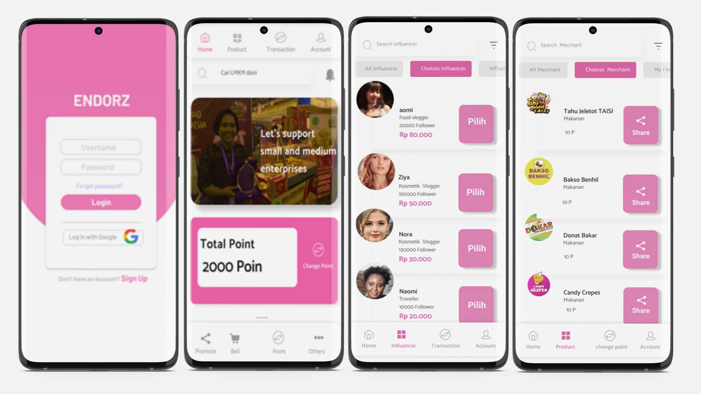
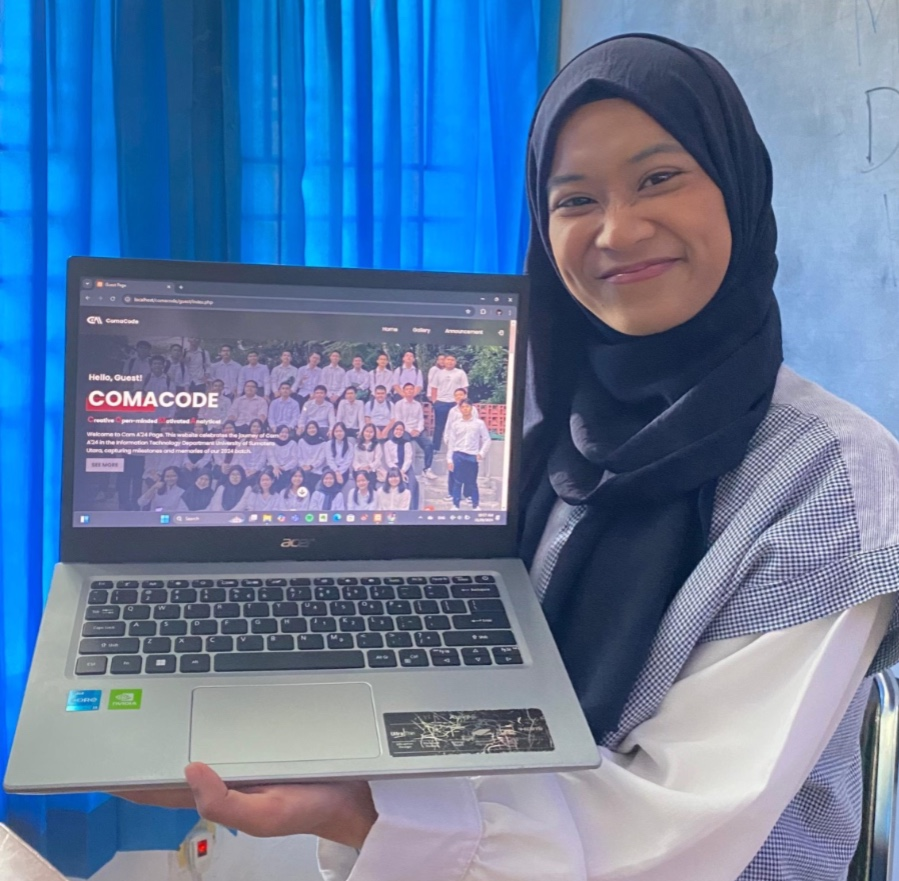
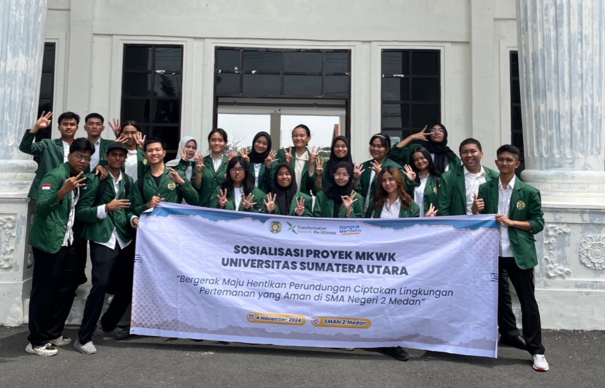

PROJECT EXPERIENCES

GO-Endorz
GO-Endorz is an application (mockup) designed to facilitate the promotion of MSMEs during the pandemic. This project was carried out by a team during high school.

Cuanintrash
Cuanintrash is an application designed to help climate change in Indonesia with a waste collection service system and also make it easy for MSMEs to recycle waste and then sell it back to the community.

ComaCode Website
This is the final project of the web programming course. This website was worked on by a team and aims to make it easier for com A TI 24'students.

Educational Outreach
This is a project from a mandatory curriculum course by USU that is required of all first semester students.